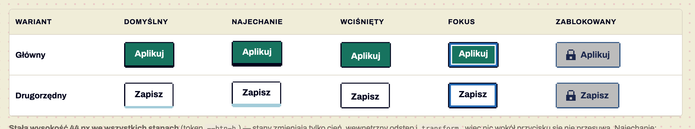
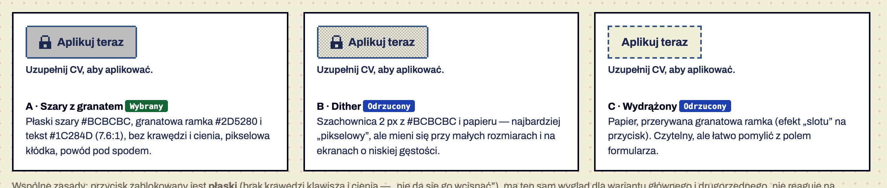
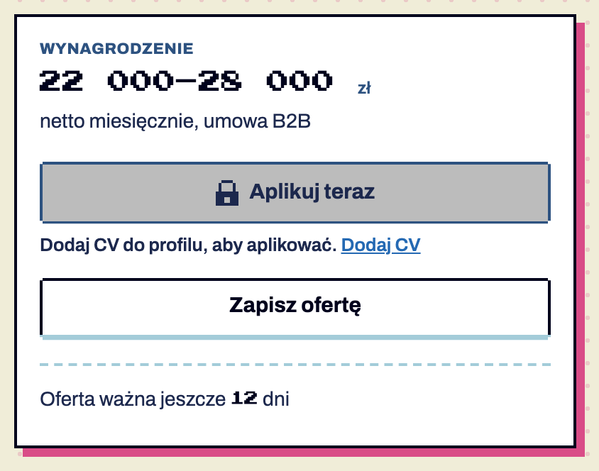
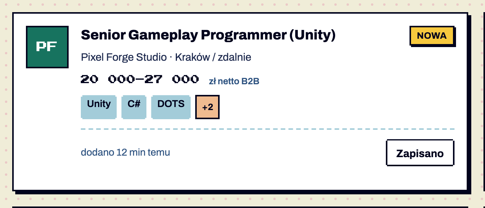

Komponenty / Przycisk
Przycisk
stabilny Przycisk · od 1.0
stabilny Przycisk kompaktowy 36 px · od 1.6
testowy Przycisk w trakcie wysyłania · od 1.6 — brakuje: użycie na 2 ekranach, test z czytnikiem
Wywołuje akcję (aplikuj, zapisz, wybierz pakiet, pokaż wyniki) albo prowadzi do kluczowej podstrony, gdy ma wygląd przycisku. Główny — jedna najważniejsza akcja w sekcji; drugorzędny — pozostałe. Do nawigacji w tekście używaj linku, do przełączania widoku listy — zakładek (K10), do statusu — badge (K02). Potwierdzone w dokumentacji S01 §6.1.
Przełącznik („Zapisz” ↔ „Zapisano”) to wariant tego samego przycisku z aria-pressed Potwierdzone w dokumentacji S01 §6.12, S03.




Anatomia i komponenty składowe
| Część / rola | Wymagana / opcjonalna | Składnik / źródło | Co można zmienić / status |
|---|---|---|---|
| kontener z ramką 2 px (rysowaną inset box-shadow) | wymagany | S02 .btn | kolor wg wariantu Potwierdzone w dokumentacji |
| schodkowy narożnik 2 px | wymagany | --notch (clip-path) | nie zmieniać Potwierdzone w dokumentacji |
| dolna krawędź klawisza 4 px | wymagana (poza stanem wciśnięty/zablokowany) | inset box-shadow | 6 px na hover, 0 przy wciśnięciu Potwierdzone w dokumentacji |
| etykieta | wymagana | Archivo 15/700 | czasownik; do ~3 słów Rekomendacja |
| ikona 16 px po lewej | opcjonalna | pokazana tylko kłódka .lock | inne ikony nie pokazane Do potwierdzenia |
| powód blokady pod przyciskiem | wymagany przy blokadzie | .btn-reason + aria-describedby | S15, S13 Potwierdzone w dokumentacji |
Warianty i zastosowanie
| Oś | Wartość | Kiedy użyć | Co się zmienia | Ograniczenia / status / źródło |
|---|---|---|---|---|
| hierarchia | główny .btn-primary | jedna najważniejsza akcja sekcji (Aplikuj, Wybierz Epicki, Załóż konto) | tło --action, biały tekst | max 1 na sekcję Potwierdzone w dokumentacji S01 §6.1 |
| hierarchia | drugorzędny .btn-secondary | pozostałe akcje, linki-przyciski (Wszystkie kategorie, Pełny ranking) | tło białe, krawędź #A3CCD9 | Potwierdzone w dokumentacji |
| szerokość | pełna .btn-full | w panelach bocznych i kartach pakietów | width 100% | S10, S11, S15 Potwierdzone w dokumentacji |
| rozmiar | kompaktowy .btn-compact 36 px | przycisk powtarzany w każdej pozycji listy: stopka karty, wiersz tabeli, koszyk | wysokość 36 px, padding 14 px, etykieta 14 px; stany jak w 44 px | decyzja właściciela 2026-11-10 Potwierdzone w dokumentacji; w components.css v1.6 — specyfikacja |
| stan | najechanie | kursor nad aktywnym przyciskiem | krawędź 6 px, translateY(−2px) | Potwierdzone w dokumentacji S04 macierz |
| stan | wciśnięty / aria-pressed=true | klik; „Zapisano” | krawędź 0, etykieta 4 px niżej | Potwierdzone w dokumentacji |
| stan | fokus | klawiatura | wewnętrzny pierścień 3 px --focus + 2 px biały | Potwierdzone w dokumentacji; outline obcinany przez clip-path |
| stan | zablokowany (wariant A) | akcja niedostępna z powodem | tło #BCBCBC, ramka/tekst granat, kłódka, brak krawędzi | Potwierdzone w dokumentacji; wybrany przez zespół; kłódka przetestowana nieformalnie |
| stan | ładowanie .is-loading | wysyłanie | etykieta znika, 3 migające piksele, rozmiar bez zmian; aria-busy | Potwierdzone w dokumentacji v1.6 — K28 |
| ikona | z ikoną 24 px | akcja z czytelnym symbolem | ikona po lewej, −4 px | Potwierdzone w dokumentacji v1.7 — K21 |
Zaobserwowane kombinacje
| Kombinacja | Gdzie pokazano |
|---|---|
| główny × domyślny/hover/wciśnięty/fokus/zablokowany | S04 Potwierdzone w dokumentacji |
| drugorzędny × te same stany | S04 Potwierdzone w dokumentacji |
| główny × pełna szerokość | S11 „Pokaż N ofert”, S10 pakiety Potwierdzone w dokumentacji |
| drugorzędny × przełącznik pressed | S10, S15 Potwierdzone w dokumentacji |
| drugorzędny × zablokowany w kontekście | S13 koszyk (główny zablokowany) Potwierdzone w dokumentacji |
| dowolny × ładowanie | nie pokazano Do potwierdzenia |
Zachowanie, treści i lokalizacja
Najechanie unosi klawisz, wciśnięcie „wciska” go — rozmiar nigdy się nie zmienia (reguła z testów: wcześniej przycisk rósł o 2–4 px i przesuwał panel filtrów) {D} S01 §12. Blokada nie znika po najechaniu, kliknięcie nie wykonuje akcji (obsługa w kodzie) {T}. Treść: czasownik + obiekt („Aplikuj teraz”, „Pokaż 8 ofert” z polską odmianą) {R}.
Zalecane i niewskazane
| Zalecane — przykład | Niewskazane — przykład | Powód / status / źródło |
|---|---|---|
| „Wybierz Epicki” jako jedyny główny w sekcji pakietów (S10) | cztery zielone przyciski obok siebie | jeden kolor akcji, inaczej brak hierarchii Potwierdzone w dokumentacji S01 zasada 6 |
| zablokowany z kłódką i powodem „Dodaj CV do profilu, aby aplikować.” (S15) | szary przycisk bez wyjaśnienia lub atrybut disabled | użytkownik wie, co zrobić; zachowany fokus Potwierdzone w dokumentacji |
| „Zapisz” jako przełącznik z aria-pressed (S10, S15) | przycisk „Zapisz”, który nic nie robi | martwe kontrolki były zgłaszane jako błąd Potwierdzone w dokumentacji S01 §6.12 |
| żółty tylko w badge „Nowa” | żółty przycisk | --highlight nie jest kolorem akcji Potwierdzone w dokumentacji |
Tokeny i style
| Zastosowanie | Token | Tryb / wariant | Wartość | Źródło | Status |
|---|---|---|---|---|---|
| tło głównego | --action | domyślny | #17735F | S01 | Potwierdzone w dokumentacji |
| krawędź głównego | --action-edge | #00021C | S01 | Potwierdzone w dokumentacji | |
| krawędź drugorzędnego | --btn-secondary-edge | #A3CCD9 | S01 | Potwierdzone w dokumentacji | |
| zablokowany | --disabled-bg/-ink/-line | #BCBCBC / #1C284D / #2D5280 | S01 | Potwierdzone w dokumentacji | |
| fokus | --focus | #2469B3 | S01 | Potwierdzone w dokumentacji | |
| wysokość | --btn-h | 44px | S01 | Potwierdzone w dokumentacji |
Wymiary, odległości i układ
| Elementy / krawędzie | Wariant | Wartość / relacja | Token | Reguła / źródło / dokładność |
|---|---|---|---|---|
| wysokość | wszystkie stany | 44 px stała | --btn-h | zmierzone 0 px różnicy w 14 przyciskach Potwierdzone w dokumentacji |
| padding poziomy | — | 18 px | — | Potwierdzone w dokumentacji S02 |
| ikona ↔ etykieta | — | gap 8 px | — | Potwierdzone w dokumentacji |
| powód ↔ przycisk | — | 8 px | — | Potwierdzone w dokumentacji .btn-reason |
| kompaktowy | .btn-compact | 36 px stała, padding 14 px | — | decyzja 2026-11-10 Potwierdzone w dokumentacji |
Typografia
| Rola tekstu | Styl | Font / weight | Rozmiar | Interlinia | Tracking | Kolor / zachowanie / status |
|---|---|---|---|---|---|---|
| etykieta | — | Archivo 700 | 15 px | 1 | — | biały / --ink / --disabled-ink Potwierdzone w dokumentacji |
| powód blokady | — | Archivo 600 | 13 px | — | — | --ink-2 Potwierdzone w dokumentacji |
Przykład na żywo
Ta sama sekcja co w examples/komponenty.html — działa na systemie 1.11.0. Przełącz motyw w nagłówku, żeby zobaczyć tryb ciemny.
Przyciski
44 px dla akcji sekcji, 36 px (.btn-compact) dla przycisku powtarzanego w każdej pozycji listy. Rozmiar nigdy nie zmienia się w stanach.
Dodaj CV do profilu, aby aplikować.
Stan ładowania (podgląd stały)
Kod przykładu
<section class="ex" id="przyciski" aria-labelledby="h-btn">
<h2 id="h-btn">Przyciski</h2>
<p>44 px dla akcji sekcji, 36 px (<code>.btn-compact</code>) dla przycisku powtarzanego w każdej pozycji listy. Rozmiar nigdy nie zmienia się w stanach.</p>
<div class="row">
<button class="btn btn-primary" type="button" data-demo-load>Aplikuj teraz</button>
<button class="btn btn-secondary" type="button" data-demo-load>Wyślij CV</button>
<button class="btn btn-secondary" type="button" aria-pressed="false" data-label-on="Zapisano" data-label-off="Zapisz ofertę">Zapisz ofertę</button>
<button class="btn btn-primary btn-compact" type="button" data-demo-load>Do koszyka</button>
<button class="btn btn-secondary btn-compact" type="button" aria-pressed="false" data-label-on="Zapisano" data-label-off="Zapisz">Zapisz</button>
<button class="btn btn-primary" type="button" data-demo-load>Wyślij (ładowanie)</button>
</div>
<div class="row" style="margin-top:16px">
<div><button class="btn btn-primary" type="button" aria-disabled="true" aria-describedby="why-1"><span class="lock" aria-hidden="true"></span>Aplikuj teraz</button>
<p class="btn-reason" id="why-1">Dodaj CV do profilu, aby aplikować.</p></div>
<div><button class="btn btn-primary is-loading" type="button" aria-disabled="true" aria-busy="true">Aplikuj teraz</button>
<p class="note">Stan ładowania (podgląd stały)</p></div>
</div>
<span class="sr-only" aria-live="polite" id="live"></span>
</section>Właściwości i atrybuty
| Właściwość / atrybut | Typ | Wartości pokazane / opisane | Domyślna | Efekt i zastosowanie | Zależności / status / źródło |
|---|---|---|---|---|---|
| wariant | enum | primary, secondary | brak — wybierasz klasę | hierarchia | Potwierdzone w dokumentacji |
| pełna szerokość | boolean | tak / nie | nie | w wąskich kolumnach | Potwierdzone w dokumentacji |
| etykieta | tekst | Aplikuj teraz, Zapisz ofertę, Pokaż 42 oferty, Wybierz Epicki… | — | licznik w etykiecie aktualizuje się (K20) | Potwierdzone w dokumentacji |
| zablokowany | boolean (aria-disabled) | true + powód | false | płaski, kłódka, powód | wymaga aria-describedby Potwierdzone w dokumentacji |
| wciśnięty (przełącznik) | boolean (aria-pressed) | false/true + data-label-on/off | false | zmienia etykietę | S03 Potwierdzone w dokumentacji |
| ikona | slot | kłódka | brak | — | inne ikony Do potwierdzenia |
Specyfikacja (design.md §6.1)
Anatomia: ramka 2 px (rysowana inset box-shadow, bo clip-path obcina obramowanie), schodkowy narożnik 2 px, dolna krawędź-klawisz 4 px, etykieta Archivo 15/700, opcjonalna ikona 16 px po lewej. Wysokość 44 px, padding poziomy 18 px.
| Wariant | Tło | Tekst | Krawędź klawisza |
|---|---|---|---|
Główny (.btn-primary) | --action | --on-action | --action-edge |
Drugorzędny (.btn-secondary) | --surface | --ink | --btn-secondary-edge |
Pełna szerokość (.btn-full) | jak wariant | — | — |
Kompaktowy (.btn-compact, v1.6) | jak wariant | etykieta 14 px | wysokość 36 px, padding 14 px; stany jak w 44 px |
| Stan | Zmiana (rozmiar zawsze bez zmian) |
|---|---|
| Domyślny | krawędź 4 px |
| Najechanie | krawędź 6 px, translateY(-2px) |
Wciśnięty (:active, .is-pressed, aria-pressed="true") | krawędź znika, etykieta schodzi 4 px w dół wewnątrz przycisku |
Fokus (:focus-visible) | wewnętrzny pierścień: 2 px ramka + 3 px --focus + 2 px biały (zewnętrzny outline byłby obcięty przez clip-path) |
| Zablokowany | patrz niżej |
Zablokowany (wariant A — zaakceptowany): płaskie tło --disabled-bg #BCBCBC, ramka --disabled-line, tekst --disabled-ink (7.6:1), bez krawędzi i cienia, kłódka po lewej, powód pod przyciskiem. Ten sam wygląd dla wariantu głównego i drugorzędnego. Nie reaguje na najechanie, kursor not-allowed.
<button class="btn btn-primary" type="button">Aplikuj teraz</button>
<button class="btn btn-secondary" type="button">Zapisz ofertę</button>
<button class="btn btn-primary" type="button" aria-disabled="true" aria-describedby="why-apply">
<span class="lock" aria-hidden="true"></span>Aplikuj teraz
</button>
<p class="btn-reason" id="why-apply">Uzupełnij CV, aby aplikować.</p>Kompaktowy 36 px — tylko dla przycisku powtarzanego w każdej pozycji listy: stopka karty (.card-foot), wiersz tabeli, koszyk. Akcja sekcji (Aplikuj, Pokaż wyniki, Wybierz pakiet) zostaje 44 px. Oba rozmiary spełniają WCAG 2.2 2.5.8.
<div class="card-foot"><span>dodano 2 godz. temu</span>
<button class="btn btn-secondary btn-compact" type="button" aria-pressed="false" data-label-on="Zapisano" data-label-off="Zapisz">Zapisz</button></div>Ładowanie (v1.6): .is-loading + aria-disabled="true" + aria-busy="true"; etykieta znika, w środku migają 3 piksele, przycisk „wciśnięty”, rozmiar bez zmian; komunikat „Wysyłanie…” w regionie aria-live.
Zasady: jeden przycisk główny na sekcję; etykieta = czasownik („Aplikuj”, „Pokaż 42 oferty”); przy aria-disabled obsługa kliknięcia w JS musi być zablokowana; nie używać żółtego jako tła przycisku.
Cel: WCAG 2.2 AA. Statyczne materiały i testy automatyczne w Chrome nie dowodzą zgodności — miejsca oznaczone „Do testu we wdrożeniu” wymagają testu z czytnikiem ekranu (design.md §0.6).
| Obszar | Ustalenie lub wymaganie | Dowód / status | Kryterium / wzorzec | Jak sprawdzić |
|---|---|---|---|---|
| rozmiar celu | 44 px wysokości; kompaktowy 36 px | zmierzone Potwierdzone w dokumentacji | WCAG 2.2 2.5.8 Target Size (Minimum), AA — min. 24×24 CSS px | pomiar w przeglądarce |
| fokus widoczny | pierścień wewnętrzny 3 px | widoczny w S04 Potwierdzone w dokumentacji | WCAG 2.4.7 Focus Visible (AA), 2.4.11 Focus Not Obscured (AA) | Tab po stronie |
| kontrast etykiety | biały na #17735F 5.7:1; granat na #BCBCBC 7.6:1 | wyliczone z hex Potwierdzone w dokumentacji | WCAG 1.4.3 (AA) — wyjątek dla nieaktywnych komponentów | narzędzie kontrastu na wdrożeniu |
| stan przełącznika | aria-pressed true/false, zmiana etykiety | S03 Potwierdzone w dokumentacji | WCAG 4.1.2 (A); APG Button (toggle) | czytnik ekranu Do testu we wdrożeniu |
| blokada | aria-disabled + aria-describedby z powodem | S15 Potwierdzone w dokumentacji | WCAG 4.1.2, 1.3.1 | czytnik ekranu odczytuje powód Do testu we wdrożeniu |
Źródła
S01 §6.1, §6.12; S02 .btn; S03; S04 macierz stanów i warianty blokady; S10, S11, S13, S15.